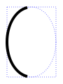
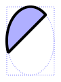
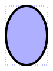
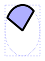

| Home · All Classes · Main Classes · Grouped Classes · Modules · Functions |
The QPainter class performs low-level painting on widgets and other paint devices. More...
#include <QPainter>
Inherited by Q3Painter and QStylePainter.
The QPainter class performs low-level painting on widgets and other paint devices.
The painter provides highly optimized functions to do most of the drawing GUI programs require. QPainter can draw everything from simple lines to complex shapes like pies and chords. It can also draw aligned text and pixmaps. Normally, it draws in a "natural" coordinate system, but it can also do view and world transformation.
The typical use of a painter is:
The common use of QPainter is inside a widget's paint event. Here's one simple example:
void SimpleExampleWidget::paintEvent()
{
QPainter paint(this);
paint.setPen(Qt::blue);
paint.drawText(rect(), Qt::AlignCenter, "The Text");
}
If you need to draw a complex shape, especially if you need to do so repeatedly, consider creating a QPainterPath and drawing it using drawPath().
Usage is simple, and there are many settings you can use:
Note that some of these settings mirror settings in some paint devices, e.g. QWidget::font(). QPainter::begin() (or the QPainter constructor) copies these attributes from the paint device. Calling, for example, QWidget::setFont() doesn't take effect until the next time a painter begins painting on it.
save() saves all of these settings on an internal stack, restore() pops them back.
The core functionality of QPainter is drawing, and there are functions to draw most primitives: drawPoint(), drawPoints(), drawLine(), drawRect(), drawRoundRect(), drawEllipse(), drawArc(), drawPie(), drawChord(), drawLineSegments(), drawPolyline(), drawPolygon(), drawConvexPolygon() and drawCubicBezier(). All of these functions have integer and floating point versions.
There are functions to draw pixmaps/images, namely drawPixmap(), drawImage() and drawTiledPixmap(). Both drawPixmap() and drawImage() produce the same result, except that drawPixmap() is faster on-screen while drawImage() may be faster on a QPrinter or other devices.
Text drawing is done using drawText(). When you need fine-grained positioning, boundingRect() tells you where a given drawText() command would draw.
There is a drawPicture() function that draws the contents of an entire QPicture using this painter. drawPicture() is the only function that disregards all the painter's settings as QPicture has its own settings.
Normally, the QPainter operates on the device's own coordinate system (usually pixels), but QPainter has good support for coordinate transformations. See The Coordinate System for a more general overview and a simple example.
The most common functions used are scale(), rotate(), translate() and shear(), all of which operate on the matrix(). setMatrix() can replace or add to the currently set matrix().
setViewport() sets the rectangle on which QPainter operates. The default is the entire device, which is usually fine. setWindow() sets the coordinate system, that is, the rectangle that maps to viewport(). What's drawn inside the window() ends up being inside the viewport(). The window's default is the same as the viewport.
QPainter can clip any drawing operation to a rectangle, a region, or a vector path. The current clip is available using the functions clipRegion() and clipPath(). Whether paths or regions are preferred (faster) depends on the underlying paintEngine(). For example, the QImage paint engine prefers paths while the X11 paint engine prefers regions. Setting a clip is done in the painters logical coordinates.
After QPainter's clipping, the paint device may also clip. For example, most widgets clip away the pixels used by child widgets, and most printers clip away an area near the edges of the paper. This additional clipping is not reflected by the return value of clipRegion() or hasClipping().
isActive() indicates whether the painter is active. begin() (and the most usual constructor) makes it active. end() (and the destructor) deactivates it. If the painter is active, device() returns the paint device on which the painter paints.
Sometimes it is desirable to make someone else paint on an unusual QPaintDevice. QPainter supports a static function to do this, setRedirected().
Warning: Unless a widget has the Qt::WA_PaintOutsidePaintEvent attribute set. A QPainter can only be used on a widget inside a paintEvent() or a function called by a paintEvent(). On Mac OS X, you can only paint on a widget in a paintEvent() regardless of this attribute's setting.
See also QPaintDevice, QWidget, QPixmap, QPrinter, QPicture, QPaintEngine, and The Coordinate System.
Defines one of the Porter-Duff composition operations. Composition modes are used to specify how a source and destination pixel are merged together.
The most common type is SourceOver (often referred to as just alpha blending) where the source pixel is blended on top of the destination pixel in such a way that the alpha component of the source defines the translucency of the pixel.
Porter Duff operator will only work when the paint device is a QImage in Format_ARGB32_Premultiplied or Format_ARGB32, where the premultiplied version is the preferred format.
When a composition mode is set it applies to all painting operator, pens, brushes, gradients and pixmap/image drawing.
| Constant | Value | Description |
|---|---|---|
| QPainter::CompositionMode_SourceOver | 0 | This is the default mode. The alpha of the source is used to blend the pixel on top of the destination. |
| QPainter::CompositionMode_DestinationOver | 1 | The alpha of the destination is used to blend it on top of the source pixels. This mode is the inverse of CompositionMode_SourceOver. |
| QPainter::CompositionMode_Clear | 2 | The pixels in the destination are cleared (set to fully transparent) independent of the source. |
| QPainter::CompositionMode_Source | 3 | The output is the source pixel. (This means a basic copy operation and is identical to SourceOver when the source pixel is opaque). |
| QPainter::CompositionMode_Destination | 4 | The output is the destination pixel. This means that the blending has no effect. This mode is the inverse of CompositionMode_Source. |
| QPainter::CompositionMode_SourceIn | 5 | The output is the source, where the alpha is reduced by that of the destination. |
| QPainter::CompositionMode_DestinationIn | 6 | The output is the destination, where the alpha is reduced by that of the source. This mode is the inverse of CompositionMode_SourceIn. |
| QPainter::CompositionMode_SourceOut | 7 | The output is the source, where the alpha is reduced by the inverse of destination. |
| QPainter::CompositionMode_DestinationOut | 8 | The output is the destination, where the alpha is reduced by the inverse of the source. This mode is the inverse of CompositionMode_SourceOut. |
| QPainter::CompositionMode_SourceAtop | 9 | The source pixel is blended on top of the destination, with the alpha of the source pixel reduced by the alpha of the destination pixel. |
| QPainter::CompositionMode_DestinationAtop | 10 | The destination pixel is blended on top of the source, with the alpha of the destination pixel is reduced by the alpha of the destination pixel. This mode is the inverse of CompositionMode_SourceAtop. |
| QPainter::CompositionMode_Xor | 11 | The source which alpha reduced with the inverse of the destination is merged with the destination which alpha is reduced by the inverse of the source. |
Renderhints are used to specify flags to QPainter that may or may not be respected by any given engine.
| Constant | Value | Description |
|---|---|---|
| QPainter::Antialiasing | 0x01 | Indicates that the engine should antialias edges of primitives if possible. |
| QPainter::TextAntialiasing | 0x02 | Indicates that the engine should antialias text if possible. |
| QPainter::SmoothPixmapTransform | 0x04 | Indicates that the engine should use a smooth pixmap transformation algorithm (such as bilinear) rather than nearest neighbor. |
The RenderHints type is a typedef for QFlags<RenderHint>. It stores an OR combination of RenderHint values.
Constructs a painter.
Notice that all painter settings (setPen, setBrush etc.) are reset to default values when begin() is called.
Constructs a painter that begins painting the paint device pd immediately.
This constructor is convenient for short-lived painters, e.g. in a paint event and should be used only once. The constructor calls begin() for you and the QPainter destructor automatically calls end().
Here's an example using begin() and end():
void MyWidget::paintEvent(QPaintEvent *)
{
QPainter p;
p.begin(this);
p.drawLine(...); // drawing code
p.end();
}
The same example using this constructor:
void MyWidget::paintEvent(QPaintEvent *)
{
QPainter p(this);
p.drawLine(...); // drawing code
}
Since the constructor cannot provide feedback when the initialization of the painter failed you should rather use begin() and end() to paint on external devices, e.g. printers.
Destroys the painter.
Returns the current background brush.
See also setBackground() and QBrush.
Returns the current background mode.
See also setBackgroundMode() and Qt::BGMode.
Begins painting the paint device pd and returns true if successful; otherwise returns false.
The errors that can occur are serious problems, such as these:
p->begin(0); // impossible - paint device cannot be 0
QPixmap pm(0, 0);
p->begin(&pm); // impossible - pm.isNull();
p->begin(myWidget);
p2->begin(myWidget); // impossible - only one painter at a time
Note that most of the time, you can use one of the constructors instead of begin(), and that end() is automatically done at destruction.
Warning: A paint device can only be painted by one painter at a time.
See also end().
Returns the bounding rectangle of the aligned text that would be printed with the corresponding drawText() function of the string str. The drawing, and hence the bounding rectangle, is constrained to the rectangle rect, or to the rectangle required to draw the text, whichever is the larger.
The flags argument is the bitwise OR of the following flags:
| Flag | Meaning |
|---|---|
| Qt::AlignLeft | aligns to the left border, or to the right border for right-to-left languages. |
| Qt::AlignRight | aligns to the right border, or to the left border for right-to-left languages. |
| Qt::AlignHCenter | aligns horizontally centered. |
| Qt::AlignTop | aligns to the top border. |
| Qt::AlignBottom | aligns to the bottom border. |
| Qt::AlignVCenter | aligns vertically centered. |
| Qt::AlignCenter | (== Qt::AlignHCenter | Qt::AlignVCenter). |
| Qt::TextSingleLine | ignores newline characters in the text. |
| Qt::TextExpandTabs | expands tabs. |
| Qt::TextShowMnemonic | interprets "&x" as x. |
| Qt::TextWordWrap | breaks the text to fit the rectangle. |
Qt::Horizontal alignment defaults to Qt::AlignLeft and vertical alignment defaults to Qt::AlignTop.
If several of the horizontal or several of the vertical alignment flags are set, the resulting alignment is undefined.
See also Qt::TextFlag.
This is an overloaded member function, provided for convenience. It behaves essentially like the above function.
Returns the bounding rectangle for the given text when placed within the specified rectangle. The option can be used to control the way the text is positioned and orientated.
This is an overloaded member function, provided for convenience. It behaves essentially like the above function.
Returns the bounding rectangle of the characters in the given text, constrained by the rectangle beginning at the point (x, y) with width w and height h.
This is an overloaded member function, provided for convenience. It behaves essentially like the above function.
Returns the bounding rectangle constrained by rectangle rect.
Returns the painter's current brush.
See also QPainter::setBrush().
Returns the brush origin currently set.
See also setBrushOrigin().
Returns the currently clip as a path. Note that the clip path is given in logical coordinates and are subject to coordinate transformations.
See also setClipPath(), setClipRegion(), setClipRect(), and setClipping().
Returns the currently set clip region. Note that the clip region is given in logical coordinates and are subject to coordinate transformations.
See also setClipRegion(), setClipRect(), setClipPath(), and setClipping().
Resturns the current composition mode.
See also QPainter::CompositionMode and setCompositionMode().
Returns the paint device on which this painter is currently painting, or 0 if the painter is not active.
See also QPaintDevice::paintingActive().
Returns the matrix that transforms from logical coordinates to device coordinates of the platform dependent paint device.
This function is only needed when using platform painting commands on the platform dependent handle, and the platform does not do transformations nativly.
See also matrix() and QPaintEngine::hasFeature().
Draws an arc defined by the rectangle r, the start angle a and the arc length alen.
The angles a and alen are 1/16th of a degree, i.e. a full circle equals 5760 (16*360). Positive values of a and alen mean counter-clockwise while negative values mean the clockwise direction. Zero degrees is at the 3 o'clock position.
Example:
QPainter painter(this);
painter.drawArc(10, 10, 70, 100, 100 * 16, 160 * 16); // draws a "(" arc

See also drawPie() and drawChord().
This is an overloaded member function, provided for convenience. It behaves essentially like the above function.
Draws the arc that fits inside the rectangle r, with the given startAngle and spanAngle.
This is an overloaded member function, provided for convenience. It behaves essentially like the above function.
Draws the arc that fits inside the rectangle (x, y, w, h), with the given startAngle and spanAngle.
Draws a chord defined by the rectangle r, the start angle a and the arc length alen.
The chord is filled with the current brush().
The angles a and alen are 1/16th of a degree, i.e. a full circle equals 5760 (16*360). Positive values of a and alen mean counter-clockwise while negative values mean the clockwise direction. Zero degrees is at the 3 o'clock position.
QPainter painter(this);
painter.drawChord(10, 10, 70, 100, 50 * 16, 150 * 16);

See also drawArc() and drawPie().
This is an overloaded member function, provided for convenience. It behaves essentially like the above function.
Draws a chord that fits inside the rectangle r with the given startAngle and spanAngle.
This is an overloaded member function, provided for convenience. It behaves essentially like the above function.
Draws a chord that fits inside the rectangle (x, y, w, h) with the given startAngle and spanAngle.
Draws the convex polygon defined by the first pointCount points in the array points using the current pen and brush.
If the supplied polygon is not convex, the results are undefined.
On some platforms (e.g. X11), drawing convex polygons can be faster than drawPolygon().
See also drawPolygon().
This is an overloaded member function, provided for convenience. It behaves essentially like the above function.
Draws the convex polygon defined by the first pointCount points in the array points using the current pen and brush.
If the supplied polygon is not convex, the results are undefined.
On some platforms (e.g. X11), drawing convex polygons can be faster than drawPolygon().
See also drawPolygon().
This is an overloaded member function, provided for convenience. It behaves essentially like the above function.
Draws the convex polygon defined by polygon using the current pen and brush.
This is an overloaded member function, provided for convenience. It behaves essentially like the above function.
Draws the convex polygon defined by polygon using the current pen and brush.
Draws the ellipse that fits inside the rectangle r.
A filled ellipse has a size of r.size(). An stroked ellipse has a size of r.size() plus the pen width.
QPainter painter(this);
painter.drawEllipse(10, 10, 70, 100);

This is an overloaded member function, provided for convenience. It behaves essentially like the above function.
Draws an ellipse that fits inside the rectangle r.
This is an overloaded member function, provided for convenience. It behaves essentially like the above function.
Draws an ellipse that fits inside the rectangle (x, y, w, h).
Draws the rectanglular portion sourceRect, of image image, into rectangle targetRect in the paint device.
If the image needs to be modified to fit in a lower-resolution result (e.g. converting from 32-bit to 8-bit), use the flags to specify how you would prefer this to happen.
See also drawPixmap().
This is an overloaded member function, provided for convenience. It behaves essentially like the above function.
Draws the rectangle sr of image image with its origin at point p.
If the image needs to be modified to fit in a lower-resolution result (e.g. converting from 32-bit to 8-bit), use the flags to specify how you would prefer this to happen.
See also drawPixmap().
This is an overloaded member function, provided for convenience. It behaves essentially like the above function.
Draws image into rectangle.
See also drawPixmap().
This is an overloaded member function, provided for convenience. It behaves essentially like the above function.
Draws the image image at point p.
See also drawPixmap().
This is an overloaded member function, provided for convenience. It behaves essentially like the above function.
Draws the image image at point p.
See also drawPixmap().
This is an overloaded member function, provided for convenience. It behaves essentially like the above function.
Draws the rectangle sr of image image with its origin at point p.
See also drawPixmap().
This is an overloaded member function, provided for convenience. It behaves essentially like the above function.
Draws image into rectangle.
See also drawPixmap().
This is an overloaded member function, provided for convenience. It behaves essentially like the above function.
Draws an image at (x, y) by copying a part of image into the paint device.
(x, y) specifies the top-left point in the paint device that is to be drawn onto. (sx, sy) specifies the top-left point in image that is to be drawn. The default is (0, 0).
(sw, sh) specifies the size of the image that is to be drawn. The default, (-1, -1), means all the way to the bottom-right of the image.
See also drawPixmap().
This is an overloaded member function, provided for convenience. It behaves essentially like the above function.
Draws a line defined by line.
See also pen().
This is an overloaded member function, provided for convenience. It behaves essentially like the above function.
Draws a line from (x1, y1) to (x2, y2) and sets the current pen position to (x2, y2).
This is an overloaded member function, provided for convenience. It behaves essentially like the above function.
Draws a line from p1 to p2.
This is an overloaded member function, provided for convenience. It behaves essentially like the above function.
Draws a line from p1 to p2.
This is an overloaded member function, provided for convenience. It behaves essentially like the above function.
See also pen().
Draws the first lineCount lines in the array lines using the current pen.
This is an overloaded member function, provided for convenience. It behaves essentially like the above function.
Draws the set of lines defined by the list lines using the current pen and brush.
This is an overloaded member function, provided for convenience. It behaves essentially like the above function.
Draws the first lineCount lines in the array lines using the current pen.
This is an overloaded member function, provided for convenience. It behaves essentially like the above function.
Draws the set of lines defined by the list lines using the current pen and brush.
This is an overloaded member function, provided for convenience. It behaves essentially like the above function.
Draws the set of lines defined by the vector of points specified by pointPairs using the current pen and brush.
This is an overloaded member function, provided for convenience. It behaves essentially like the above function.
Draws a line for each pair of points in the vector pointPairs using the current pen.
If there is an odd number of points in the array, the last point will be ignored.
This is an overloaded member function, provided for convenience. It behaves essentially like the above function.
Draws the first lineCount lines in the array pointPairs using the current pen.
The lines are specified as pairs of points so the number of entries in pointPairs must be at least lineCount * 2
See also drawLines().
This is an overloaded member function, provided for convenience. It behaves essentially like the above function.
Draws the first lineCount lines in the array pointPairs using the current pen.
The lines are specified as pairs of points so the number of entries in pointPairs must be at least lineCount * 2
See also drawLines().
Draws the painter path specified by path using the current pen for outline and the current brush for filling.
Replays the picture picture at point p.
This function does exactly the same as QPicture::play() when called with p = QPoint(0, 0).
This is an overloaded member function, provided for convenience. It behaves essentially like the above function.
Draws picture picture at point (x, y).
This is an overloaded member function, provided for convenience. It behaves essentially like the above function.
Draws picture picture at point p.
Draws a pie defined by the rectangle r, the start angle a and the arc length alen.
The pie is filled with the current brush().
The angles a and alen are 1/16th of a degree, i.e. a full circle equals 5760 (16*360). Positive values of a and alen mean counter-clockwise while negative values mean the clockwise direction. Zero degrees is at the 3 o'clock position.
QPainter painter(this);
painter.drawPie(10, 10, 70, 100, 50 * 16, 100 * 16);

See also drawArc() and drawChord().
This is an overloaded member function, provided for convenience. It behaves essentially like the above function.
Draws a pie segment that fits inside the rectangle rect with the given startAngle and spanAngle.
This is an overloaded member function, provided for convenience. It behaves essentially like the above function.
Draws a pie segment that fits inside the rectangle (x, y, w, h) with the given startAngle and spanAngle.
Draws the rectanglular portion sr, of pixmap pm, into rectangle r in the paint device.
See also drawImage().
This is an overloaded member function, provided for convenience. It behaves essentially like the above function.
Draws the rectangular portion sourceRect of the pixmap pixmap in the rectangle targetRect.
See also drawImage().
This is an overloaded member function, provided for convenience. It behaves essentially like the above function.
Draws the rectangular portion sourceRect of the pixmap pixmap at the point p.
See also drawImage().
This is an overloaded member function, provided for convenience. It behaves essentially like the above function.
Draws the pixmap at the point p.
See also drawImage().
This is an overloaded member function, provided for convenience. It behaves essentially like the above function.
Draws the given pixmap at position (x, y).
See also drawImage().
This is an overloaded member function, provided for convenience. It behaves essentially like the above function.
Draws the pixmap in the rectangle at position (x, y) and of the given width and height.
See also drawImage().
This is an overloaded member function, provided for convenience. It behaves essentially like the above function.
Draws the rectangular portion with the origin (sx, sy), width sw and height sh, of the pixmap pm, at the point (x, y), with a width of w and a height of h.
See also drawImage().
This is an overloaded member function, provided for convenience. It behaves essentially like the above function.
Draws a pixmap at (x, y) by copying a part of pixmap into the paint device.
(x, y) specifies the top-left point in the paint device that is to be drawn onto. (sx, sy) specifies the top-left point in pixmap that is to be drawn. The default is (0, 0).
(sw, sh) specifies the size of the pixmap that is to be drawn. The default, (-1, -1), means all the way to the bottom-right of the pixmap.
See also QPixmap::setMask() and drawImage().
This is an overloaded member function, provided for convenience. It behaves essentially like the above function.
Draws the rectangle sr of pixmap pm with its origin at point p.
See also drawImage().
This is an overloaded member function, provided for convenience. It behaves essentially like the above function.
Draws the pixmap pm with its origin at point p.
See also drawImage().
This is an overloaded member function, provided for convenience. It behaves essentially like the above function.
Draws the pixmap pm into the rectangle r.
See also drawImage().
Draws a single point at position p using the current pen's color.
See also QPen.
This is an overloaded member function, provided for convenience. It behaves essentially like the above function.
Draws a single point at position p using the current pen's color.
See also QPen.
This is an overloaded member function, provided for convenience. It behaves essentially like the above function.
Draws a single point at position (x, y).
Draws the first pointCount points in the array points using the current pen's color.
See also QPen.
This is an overloaded member function, provided for convenience. It behaves essentially like the above function.
Draws the points in the list points.
This is an overloaded member function, provided for convenience. It behaves essentially like the above function.
Draws the first pointCount points in the array points using the current pen's color.
See also QPen.
This is an overloaded member function, provided for convenience. It behaves essentially like the above function.
Draws the points in the polygon points using the current pen's color.
Draws the polygon defined by the first pointCount points in the array points using the current pen and brush.
The first point is implicitly connected to the last point.
The polygon is filled with the current brush(). If fillRule is Qt::WindingFill, the polygon is filled using the winding fill algorithm. If fillRule is Qt::OddEvenFill, the polygon is filled using the odd-even fill algorithm. See Qt::FillRule for a more detailed description of these fill rules.
See also drawLines(), drawPolyline(), and QPen.
This is an overloaded member function, provided for convenience. It behaves essentially like the above function.
Draws the polygon defined by the points in pa using the fill rule fillRule.
This is an overloaded member function, provided for convenience. It behaves essentially like the above function.
Draws the polygon defined by the points in pa using the fill rule fillRule.
This is an overloaded member function, provided for convenience. It behaves essentially like the above function.
Draws the polygon defined by the first pointCount points in the array points.
Draws the polyline defined by the first pointCount points in points using the current pen.
See also drawLines(), drawPolygon(), and QPen.
This is an overloaded member function, provided for convenience. It behaves essentially like the above function.
Draws the polyline defined by pa using the current pen.
This is an overloaded member function, provided for convenience. It behaves essentially like the above function.
Draws the polyline defined by pa using the current pen.
This is an overloaded member function, provided for convenience. It behaves essentially like the above function.
Draws the polyline defined by the first pointCount points in the array points using the current pen.
Draws the rectangle r with the current pen and brush.
A filled rectangle has a size of r.size(). A stroked rectangle has a size of r.size() plus the pen width.
This is an overloaded member function, provided for convenience. It behaves essentially like the above function.
Draws a rectangle with upper left corner at (x, y) and with width w and height h.
This is an overloaded member function, provided for convenience. It behaves essentially like the above function.
Draws the rectangle rect with the current pen and brush.
Draws the first rectCount rectangles in the array rects using the current pen and brush.
See also drawRect().
This is an overloaded member function, provided for convenience. It behaves essentially like the above function.
Draws the rectangles specified in rectangles using the current pen and brush.
This is an overloaded member function, provided for convenience. It behaves essentially like the above function.
Draws the first rectCount rectangles in the array rects using the current pen and brush.
See also drawRect().
This is an overloaded member function, provided for convenience. It behaves essentially like the above function.
Draws the rectangles specified in rectangles using the current pen and brush.
Draws a rectangle r with rounded corners.
The xRnd and yRnd arguments specify how rounded the corners should be. 0 is angled corners, 99 is maximum roundedness.
A filled rectangle has a size of r.size(). A stroked rectangle has a size of r.size() plus the pen width.
This is an overloaded member function, provided for convenience. It behaves essentially like the above function.
Draws the rectangle x, y, w, h with rounded corners.
This is an overloaded member function, provided for convenience. It behaves essentially like the above function.
Draws the rectangle r with rounded corners.
Draws the string str with the currently defined text direction, beginning at position p.
See also Qt::LayoutDirection.
This is an overloaded member function, provided for convenience. It behaves essentially like the above function.
Draws the given text in the rectangle specified using the option to control its positioning and orientation.
This is an overloaded member function, provided for convenience. It behaves essentially like the above function.
Draws the given text at position (x, y), using the painter's text layout direction.
See also layoutDirection() and setLayoutDirection().
This is an overloaded member function, provided for convenience. It behaves essentially like the above function.
Draws the given text within the rectangle with origin (x, y), width w and height h. The flags that are given in the flags parameter are a selection of flags from Qt::AlignmentFlags and Qt::TextFlags combined using the bitwise OR operator. br (if not null) is set to the actual bounding rectangle of the output.
This is an overloaded member function, provided for convenience. It behaves essentially like the above function.
Draws the string str within the rectangle r. The flags that are given in the flags parameter are a selection of flags from Qt::AlignmentFlags and Qt::TextFlags combined using the bitwise OR operator. br (if not null) is set to the actual bounding rectangle of the output.
This is an overloaded member function, provided for convenience. It behaves essentially like the above function.
Draws the string s at position p, using the painter's layout direction.
See also layoutDirection() and setLayoutDirection().
This is an overloaded member function, provided for convenience. It behaves essentially like the above function.
Draws the string str within the rectangle r. The specified flags are constructed from Qt::AlignmentFlags and Qt::TextFlags, combined using the bitwise OR operator. If br is not null, it is set to the actual bounding rectangle of the output.
Draws a tiled pixmap in the specified rectangle.
(x, y) specifies the top-left point in the paint device that is to be drawn onto; with the width and height given by w and h. (sx, sy) specifies the top-left point in the pixmap that is to be drawn; this defaults to (0, 0).
Calling drawTiledPixmap() is similar to calling drawPixmap() several times to fill (tile) an area with a pixmap, but is potentially much more efficient depending on the underlying window system.
See also drawPixmap().
This is an overloaded member function, provided for convenience. It behaves essentially like the above function.
Draws a tiled pixmap, inside rectangle rect with its origin at point sp.
This is an overloaded member function, provided for convenience. It behaves essentially like the above function.
Draws a tiled pixmap, inside rectangle r with its origin at point sp.
Ends painting. Any resources used while painting are released. You don't normally need to call this since it is called by the destructor.
See also begin() and isActive().
Erases the area inside the rectangle r. Equivalent to fillRect(r, background()).
This is an overloaded member function, provided for convenience. It behaves essentially like the above function.
Erases the area inside the rectangle rect. Equivalent to fillRect(rect, background()).
This is an overloaded member function, provided for convenience. It behaves essentially like the above function.
Erases the area inside x, y, w, h. Equivalent to fillRect(x, y, w, h, background()).
Fills the path path using the given brush. The outline is not drawn.
Fills the rectangle r with the brush.
You can specify a QColor as brush, since there is a QBrush constructor that takes a QColor argument and creates a solid pattern brush.
See also drawRect().
This is an overloaded member function, provided for convenience. It behaves essentially like the above function.
Fills the rectangle rect with the brush.
You can specify a QColor as brush, since there is a QBrush constructor that takes a QColor argument and creates a solid pattern brush.
See also drawRect().
This is an overloaded member function, provided for convenience. It behaves essentially like the above function.
Fills the rectangle (x, y, w, h) with the brush.
You can specify a QColor as brush, since there is a QBrush constructor that takes a QColor argument and creates a solid pattern brush.
See also drawRect().
Returns the currently set painter font.
If the painter is active, returns the font info for the painter. If the painter is not active, the return value is undefined.
See also fontMetrics() and isActive().
If the painter is active, returns the font metrics for the painter. If the painter is not active, the return value is undefined.
See also fontInfo() and isActive().
Returns true if clipping has been set; otherwise returns false.
See also setClipping().
Initializes the painters pen, background and font to the same as widget. To be called after begin() while the painter is active.
Returns true if the painter is active painting, i.e. begin() has been called and end() has not yet been called; otherwise returns false.
See also QPaintDevice::paintingActive().
Returns the layout direction used by the painter when drawing text.
See also setLayoutDirection().
Returns the world transformation matrix.
See also setMatrix().
Returns true if world transformation is enabled; otherwise returns false.
See also setMatrixEnabled() and setMatrix().
If the painter is active, returns the paint engine that the painter is currently operating on; otherwise 0.
Returns the painter's current pen.
See also setPen().
Returns a flag that specifies the rendering hints that are set for this painter.
Resets any transformations that were made using translate(), scale(), shear(), rotate(), setMatrix(), setViewport() and setWindow().
See also matrix() and setMatrix().
Restores the current painter state (pops a saved state off the stack).
See also save().
Rotates the coordinate system a degrees clockwise.
See also translate(), scale(), shear(), resetXForm(), setMatrix(), and xForm().
Saves the current painter state (pushes the state onto a stack). A save() must be followed by a corresponding restore(). end() unwinds the stack.
See also restore().
Scales the coordinate system by (sx, sy).
See also translate(), shear(), rotate(), resetXForm(), setMatrix(), and xForm().
Sets the background brush of the painter to bg.
The background brush is the brush that is filled in when drawing opaque text, stippled lines and bitmaps. The background brush has no effect in transparent background mode (which is the default).
See also background(), setBackgroundMode(), and Qt::BGMode.
Sets the background mode of the painter to mode, which must be either Qt::TransparentMode (the default) or Qt::OpaqueMode.
Transparent mode draws stippled lines and text without setting the background pixels. Opaque mode fills these space with the current background color.
Note that in order to draw a bitmap or pixmap transparently, you must use QPixmap::setMask().
See also backgroundMode() and setBackground().
Sets the painter's brush to black color and the specified style.
This is an overloaded member function, provided for convenience. It behaves essentially like the above function.
Sets the painter's brush to brush.
The brush defines how shapes are filled.
See also brush().
Sets the brush origin to p.
The brush origin specifies the (0, 0) coordinate of the painter's brush. This setting only applies to pattern brushes and pixmap brushes.
See also brushOrigin().
This is an overloaded member function, provided for convenience. It behaves essentially like the above function.
Sets the brush's origin to p.
This is an overloaded member function, provided for convenience. It behaves essentially like the above function.
Sets the brush's origin to point (x, y).
Sets the clip path for the painter to path, with the clip operation op.
The clip path is specified in logical (painter) coordinates.
See also clipPath(), setClipRect(), setClipRegion(), and setClipping().
Sets the clip region to the rectangle rect using the clip operation op. The default operation is to replace the current clip rectangle.
See also clipRect(), setClipRegion(), setClipPath(), and setClipping().
This is an overloaded member function, provided for convenience. It behaves essentially like the above function.
Sets the clip region to the rectangle x, y, w, h and enables clipping.
See also clipRect(), setClipRegion(), setClipPath(), and setClipping().
This is an overloaded member function, provided for convenience. It behaves essentially like the above function.
Sets the clip region of the rectange rect.
Sets the clip region to r using the clip operation op. The default clip operation is to replace the current clip region.
Note that the clip region is given in logical coordinates and subject to coordinate transformation.
See also clipRegion(), setClipRect(), setClipPath(), and setClipping().
Enables clipping if enable is true, or disables clipping if enable is false.
See also hasClipping(), setClipRect(), setClipRegion(), and setClipPath().
Sets the composition mode to mode.
Warning: You can only set the composition mode for QPainter objects that operates on a QImage.
See also compositionMode(), QPainter::CompositionMode, and QPaintEngine::PaintEngineFeature.
Sets the painter's font to font.
This font is used by subsequent drawText() functions. The text color is the same as the pen color.
If you set a font that isn't available, Qt finds a close match. font() will return what you set using setFont() and fontInfo() returns the font actually being used (which may be the same).
See also font() and drawText().
Sets the layout direction used by the painter when drawing text to the direction specified.
See also layoutDirection().
Sets the transformation matrix to matrix and enables transformations.
If combine is true, then matrix is combined with the current transformation matrix; otherwise matrix replaces the current transformation matrix.
If matrix is the identity matrix and combine is false, this function calls setMatrixEnabled(false). (The identity matrix is the matrix where QMatrix::m11() and QMatrix::m22() are 1.0 and the rest are 0.0.)
World transformations are applied after the view transformations (i.e. window and viewport).
The following functions can transform the coordinate system without using a QMatrix:
They operate on the painter's worldMatrix() and are implemented like this:
void QPainter::rotate(qreal a)
{
QMatrix m;
m.rotate(a);
setMatrix(m, true);
}
Note that you should always have combine be true when you are drawing into a QPicture. Otherwise it may not be possible to replay the picture with additional transformations. Using translate(), scale(), etc., is safe.
For a brief overview of coordinate transformation, see the Coordinate System Overview.
See also matrix(), setMatrixEnabled(), and QMatrix.
Enables transformations if enable is true, or disables world transformations if enable is false. The world transformation matrix is not changed.
See also matrixEnabled(), setMatrix(), and matrix().
Sets a new painter pen.
The pen defines how to draw lines and outlines, and it also defines the text color.
See also pen().
This is an overloaded member function, provided for convenience. It behaves essentially like the above function.
Sets the painter's pen to have style Qt::SolidLine, width 0 and the specified color.
This is an overloaded member function, provided for convenience. It behaves essentially like the above function.
Sets the painter's pen to have style style, width 0 and black color.
Redirects all paint commands for a paint device, device, to another paint device, replacement. The optional point offset defines an offset within the source device. After painting you must call restoreRedirected().
In general, you'll probably find calling QPixmap::grabWidget() or QPixmap::grabWindow() is an easier solution.
See also redirected().
Sets the render hint hint on this painter if on is true; otherwise clears the render hint.
Enables view transformations if enable is true, or disables view transformations if enable is false.
See also viewTransformEnabled(), setWindow(), setViewport(), setMatrix(), and setMatrixEnabled().
Sets the viewport rectangle view transformation for the painter and enables view transformation.
The viewport rectangle is part of the view transformation. The viewport specifies the device coordinate system and is specified by the x, y, w width and h height parameters. Its sister, the window(), specifies the logical coordinate system.
The default viewport rectangle is the same as the device's rectangle. See the Coordinate System Overview for an overview of coordinate transformation.
See also viewport(), setWindow(), setViewTransformEnabled(), setMatrix(), and setMatrixEnabled().
This is an overloaded member function, provided for convenience. It behaves essentially like the above function.
Sets the painter's viewport rectangle to r.
Sets the window rectangle view transformation for the painter and enables view transformation.
The window rectangle is part of the view transformation. The window specifies the logical coordinate system and is specified by the x, y, w width and h height parameters. Its sister, the viewport(), specifies the device coordinate system.
The default window rectangle is the same as the device's rectangle. See the Coordinate System Overview for an overview of coordinate transformation.
See also window(), setViewport(), setViewTransformEnabled(), setMatrix(), and setMatrixEnabled().
This is an overloaded member function, provided for convenience. It behaves essentially like the above function.
Sets the painter's window to the rectangle r.
Shears the coordinate system by (sh, sv).
See also translate(), scale(), rotate(), resetXForm(), setMatrix(), and xForm().
Draws the outline (strokes) the path path with the pen specified by pen
Translates the coordinate system by offset. After this call, offset is added to points.
For example, the following code draws the same point twice:
void MyWidget::paintEvent()
{
QPainter paint(this);
paint.drawPoint(0, 0);
paint.translate(100.0, 40.0);
paint.drawPoint(-100, -40);
}
See also scale(), shear(), rotate(), resetXForm(), setMatrix(), and xForm().
This is an overloaded member function, provided for convenience. It behaves essentially like the above function.
Translates the coordinate system by the vector (dx, dy).
This is an overloaded member function, provided for convenience. It behaves essentially like the above function.
Translates the coordinate system by the given offset.
Returns true if view transformation is enabled; otherwise returns false.
See also setViewTransformEnabled() and matrix().
Returns the viewport rectangle.
See also setViewport() and setViewTransformEnabled().
Returns the window rectangle.
See also setWindow() and setViewTransformEnabled().
Draws the plain rectangle specified by (x, y, w, h) using the painter p.
The color argument c specifies the line color.
The lineWidth argument specifies the line width.
The rectangle's interior is filled with the fill brush unless fill is 0.
If you want to use a QFrame widget instead, you can make it display a plain rectangle, for example QFrame::setFrameStyle( QFrame::Box | QFrame::Plain).
Warning: This function does not look at QWidget::style() or QApplication::style()-> Use the drawing functions in QStyle to make widgets that follow the current GUI style.
See also qDrawShadeRect() and QStyle::drawPrimitive().
Draws a horizontal (y1 == y2) or vertical (x1 == x2) shaded line using the painter p.
Nothing is drawn if y1 != y2 and x1 != x2 (i.e. the line is neither horizontal nor vertical).
The palette pal specifies the shading colors (light, dark and middle colors).
The line appears sunken if sunken is true, or raised if sunken is false.
The lineWidth argument specifies the line width for each of the lines. It is not the total line width.
The midLineWidth argument specifies the width of a middle line drawn in the QPalette::mid() color.
If you want to use a QFrame widget instead, you can make it display a shaded line, for example QFrame::setFrameStyle( QFrame::HLine | QFrame::Sunken).
Warning: This function does not look at QWidget::style() or QApplication::style()-> Use the drawing functions in QStyle to make widgets that follow the current GUI style.
See also qDrawShadeRect(), qDrawShadePanel(), and QStyle::drawPrimitive().
Draws the shaded panel specified by (x, y, w, h) using the painter p.
The palette pal specifies the shading colors (light, dark and middle colors).
The panel appears sunken if sunken is true, or raised if sunken is false.
The lineWidth argument specifies the line width.
The panel's interior is filled with the fill brush unless fill is 0.
If you want to use a QFrame widget instead, you can make it display a shaded panel, for example QFrame::setFrameStyle( QFrame::Panel | QFrame::Sunken).
Warning: This function does not look at QWidget::style() or QApplication::style()-> Use the drawing functions in QStyle to make widgets that follow the current GUI style.
See also qDrawWinPanel(), qDrawShadeLine(), qDrawShadeRect(), and QStyle::drawPrimitive().
Draws the shaded rectangle specified by (x, y, w, h) using the painter p.
The paletted pal specifies the shading colors (light, dark and middle colors).
The rectangle appears sunken if sunken is true, or raised if sunken is false.
The lineWidth argument specifies the line width for each of the lines. It is not the total line width.
The midLineWidth argument specifies the width of a middle line drawn in the QPalette::mid() color.
The rectangle's interior is filled with the fill brush unless fill is 0.
If you want to use a QFrame widget instead, you can make it display a shaded rectangle, for example QFrame::setFrameStyle( QFrame::Box | QFrame::Raised).
Warning: This function does not look at QWidget::style() or QApplication::style()-> Use the drawing functions in QStyle to make widgets that follow the current GUI style.
See also qDrawShadeLine(), qDrawShadePanel(), qDrawPlainRect(), QStyle::drawItemText(), QStyle::drawItemPixmap(), QStyle::drawControl(), and QStyle::drawComplexControl().
Draws the Windows-style button specified by (x, y, w, h) using the painter p.
The palette pal specifies the shading colors (light, dark and middle colors).
The button appears sunken if sunken is true, or raised if sunken is false.
The line width is 2 pixels.
The button's interior is filled with the *fill brush unless fill is 0.
Warning: This function does not look at QWidget::style() or QApplication::style()-> Use the drawing functions in QStyle to make widgets that follow the current GUI style.
See also qDrawWinPanel() and QStyle::drawControl().
Draws the Windows-style panel specified by (x, y, w, h) using the painter p.
The palette pal specifies the shading colors.
The panel appears sunken if sunken is true, or raised if sunken is false.
The line width is 2 pixels.
The button's interior is filled with the fill brush unless fill is 0.
If you want to use a QFrame widget instead, you can make it display a shaded panel, for example QFrame::setFrameStyle( QFrame::WinPanel | QFrame::Raised).
Warning: This function does not look at QWidget::style() or QApplication::style()-> Use the drawing functions in QStyle to make widgets that follow the current GUI style.
See also qDrawShadePanel(), qDrawWinButton(), and QStyle::drawPrimitive().
| Copyright © 2005 Trolltech | Trademarks | Qt 4.1.0 |